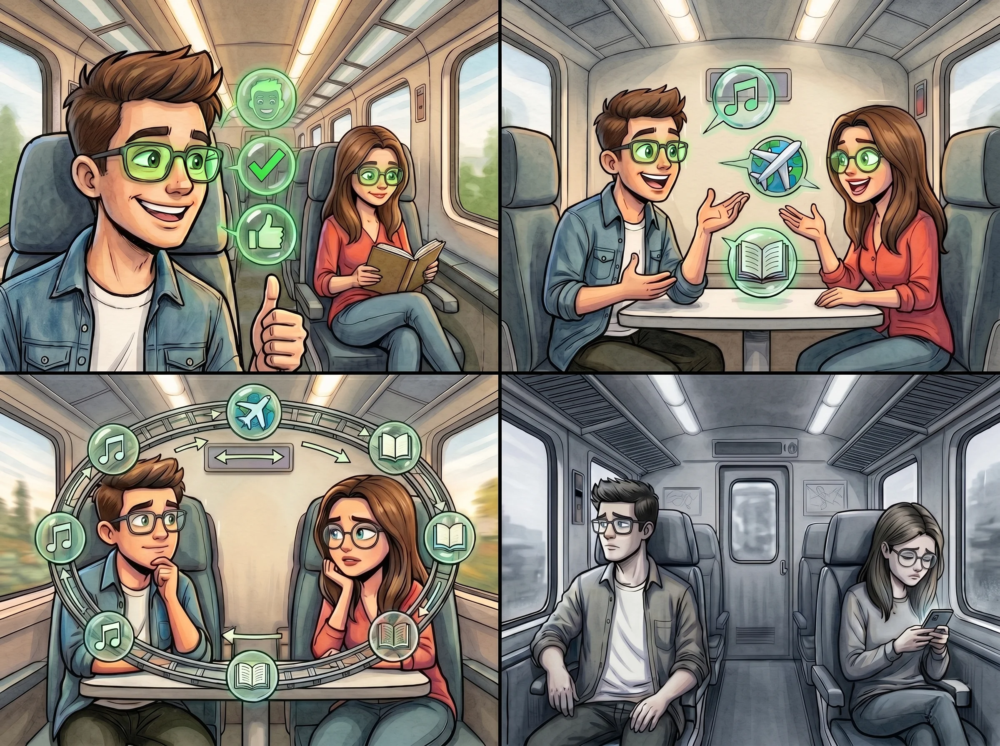
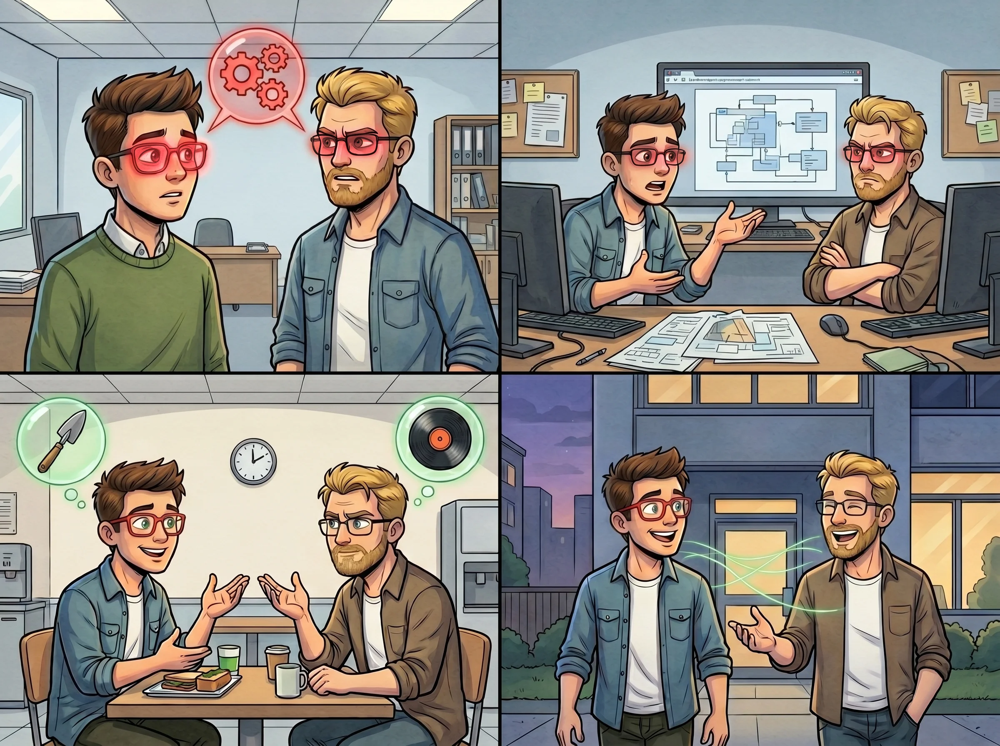

Et si nos lunettes rendaient finalement nos relations superficielles ?
Est-ce que des conversations parfaites rendaient nos relations superficielles ?

Une compatibilité parfaite
L'autre jour, lors de mon trajet habituel en train, mon regard a croisé celui d'une inconnue. Instantanément, mes lunettes « Lunas » ont passé son profil au crible : le verdict est tombé, nous sommes compatibles à 90 %. Mes verres se sont alors teintés d'un vert rassurant.
D'un simple clic sur l'onglet « Profil de la personne », la vie d'Eva n'a plus eu de secret pour moi. Porté par ce signal positif, j'ai franchi le pas et j'ai osé l'aborder. Grâce à l'affichage en temps réel de nos points communs, la discussion a démarré avec une fluidité déconcertante, nous donnant l'illusion incroyable de nous connaître depuis déjà dix ans.
Peur de sortir de notre zone de confort
Le lendemain, rebelote. Je retrouve Eva et, en apparence, l'échange reste d'une fluidité exemplaire. Pourtant, une gêne invisible commence à s'installer. J’ai bien tenté de changer de sujet, de sortir des sentiers battus pour explorer l'imprévu, mais nous revenions systématiquement aux points communs suggérés par l’algorithme.
C’était la solution de facilité pour nous deux : une sorte de sécurité sociale artificielle. C'est comme si nous étions devenus incapables de sortir de cette boucle sans fin, prisonniers d'une perfection programmée qui nous empêchait d'aller plus loin.
Les conversations parfaites ne crée peut-être pas des relations authentiques?
Les jours passaient et, chaque matin, je retrouvais Eva dans le train. Mais l'enthousiasme du début a fait place à un ennui profond : je commençais à étouffer. J'avais cette impression de tourner en rond, prisonnier d'une boucle où les sujets de conversation se répétaient sans cesse.
Nous restions bloqués sur ce que nous aimions tous les deux ; dès que l’on tentait d’aller dans des chemins inconnus, les échanges perdaient tout leur naturel. Malgré les voyants verts et les scores de compatibilité, j’avais l’impression de ne pas la connaître réellement. Notre relation semblait désespérément superficielle, comme s'il manquait ce lien profond et authentique que seul l'imprévu peut créer.
Peut-être que nos divergences rendaient nos relations humaines ?

Un début chaotique
Un jour au boulot, je me retrouve à bosser avec Guillaume, une personne avec qui je ne suis pas du tout compatible d'après l'algorithme. Quand je le regarde, mes verres deviennent rouges, mais je n'ai pas le choix : je dois travailler avec lui.
Au début, c’est le blocage total. Je ne sais pas quoi lui dire en dehors des explications techniques sur la tâche que nous devons effectuer. On a même eu beaucoup de mal à se mettre d’accord sur la façon de la réaliser, car nos méthodes s’opposaient.
Réapprendre à connaître quelqu’un sans les algorithmes.
Les heures passaient et j’ai continué à travailler avec Guillaume. Les barrières du début tombaient petit à petit. En discutant avec lui, on finissait par trouver des terrains d’entente sur notre façon de collaborer ; on y allait avec des pincettes, mais à la fin de la journée, nos interactions étaient déjà bien moins tendues qu’au départ.
Plus je passais de journées à bosser avec lui, plus j’apprenais à le connaître. On s’est même découvert des centres d’intérêt communs. Au fil du temps, il m’a fait découvrir de nouvelles choses que je ne pensais jamais aimer, et vice versa. Finalement, j’ai même commencé à apprécier de passer du temps avec lui en dehors du boulot.
La vraie question est : « Est-ce qu’on peut vraiment se fier aux algorithmes pour connaître la compatibilité entre deux personnes ? »
Au final, en apprenant à connaître Guillaume, nous avons construit une relation basée sur nos différences. Ce sont justement ces quelques divergences qui rendent notre lien authentique.
Si j’avais écouté aveuglément l’algorithme, je serais passé à côté d’une rencontre précieuse. Ce n’est peut-être pas une relation « parfaite » selon les critères de mes verres, mais c’est une relation où l’on apprend l’un de l’autre. J'ai compris que les algorithmes ne pourront jamais remplacer l’imprévisibilité humaine. C’est précisément ce grain de sable, ce risque de l'inconnu, qui rend nos relations véritablement humaines.
Le Celeon